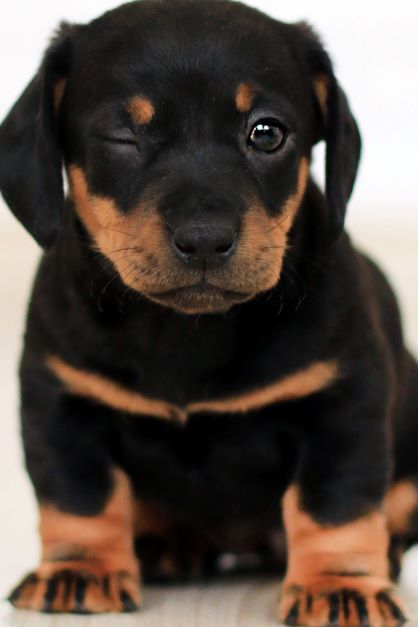

Choosing a Dog
Be realistic about your lifestyle and energy level. If you’re a couch potato, don’t adopt a dog who needs lots of exercise. Adopt a dog with the same or lower energy level as you. And if you work long hours or travel frequently, don’t adopt a puppy. They need lots of training and attention. Adopt a laid-back guy instead. Who else lives in your home? Do you have young children or other pets? It’s important to adopt a dog that will fit in safely and happily with all the members of your household. If you’re new to dog parenthood, have small children at home, and a demanding job, getting a high-maintenance dog might not be a good idea. You would probably do better with a chill, older dog who doesn’t need to be trained.
